# Algunas librerías y funciones necesarias
from unidad6_funciones import *
import numpy as np
import matplotlib.pyplot as plt
import pandas as pd
import numpy.polynomial.polynomial as npol1 Aproximación polinomial - Parte 1: interpolación
1.1 Introducción
Una de las clases más útiles y conocidas de funciones que mapean el conjunto de números reales en sí mismo son los polinomios algebraicos:
\[ P_n(x) = a_{n} x^{n} +a_{n-1} x^{n-1} +...+a_{1} x + a_0 \]
donde \(n\) es un entero positivo y \(a_0, ..., a_n\) son constantes reales.
Una razón de su importancia es que se aproximan de manera uniforme a las funciones continuas.
Es decir, dada una función definida y continua sobre un intervalo cerrado y acotado, existe un polinomio que está tan “cerca” de la función dada como se desee. Ver teorema 3.1 (Weierstrass) y Figura 3.1 (página 78).
Por esta razón, empleamos polinomios para aproximar el valor de una función \(f(x)\) en un intervalo de interés (es decir, para realizar interpolación) y también para aproximar derivadas e integrales.
Englobamos a las técnicas que permiten cumplir con esos objetivos bajo el nombre de métodos de aproximación polinomial.
Observación: los polinomios de Taylor son esenciales en muchos aspectos del análisis numérico porque permiten aproximar el valor de una función alrededor de un punto específico. Sin embargo, la aproximación polinomial no se basa en el uso de polinomios de Taylor. Leer páginas 78 y 79.
En este apunte vamos a tratar el tema de la interpolación.
Preparativos para los ejemplos en Python:
1.2 Polinomios de interpolación de Lagrange
1.2.1 Fórmula
- Vamos a considerar el problema en el que contamos con los valores que toma una función de interés \(f\) en los \(n+1\) puntos \(x_0, x_1, ..., x_n\) (es decir, conocemos \(f(x_0), ..., f(x_n)\)) y queremos aproximar el valor de \(f(x)\) para otros valores \(x\).
Definición: la interpolación es el uso de polinomios que coinciden con una función \(f\) en puntos determinados dentro de un intervalo para aproximar el valor de \(f\) en otros puntos dentro del mismo intervalo.
- A los valores \(x_i\) para los cuales tenemos \(f(x_i)\) les decimos nodos y a estos pares de valores los presentamos en una tabla como la siguiente:
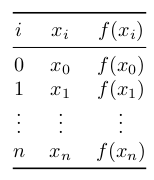
Por ejemplo:
i \(x_i\) \(f(x_i)\) 0 -1 0.5403 1 0 1.0000 2 2 -0.4162 3 2.5 -0.8011 Pensemos en que estamos estudiando una función \(f\) para la cual conocemos los valores \(f(x_0)\) y \(f(x_1)\) y necesitamos aproximar cuánto vale \(f(x)\) para algún \(x\) entre \(x_0\) y \(x_1\).
¿Qué se nos ocurre hacer?
Podemos trazar una recta que una los puntos \((x_0, f(x_0))\) y \((x_1, f(x_1))\) y utilizar como aproximación el valor de esta recta para el \(x\) de interés.
Eso equivale a utilizar un polinomio de grado 1 (una recta) para hacer la interpolación.
De nuestros conocimientos de geometría sabemos que la ecuación de la recta que pasa por dos puntos \((x_0, f(x_0))\) y \((x_1, f(x_1))\) es:
\[ P_1(x) = f(x_0) + \frac{f(x_1) - f(x_0)}{x_1 - x_0} (x - x_0) \]
Esto se puede reescribir como:
\[ P_1(x) = \underbrace{\frac{x - x_1}{x_0 - x_1}}_{L_0(x)} f(x_0) + \underbrace{\frac{x - x_0}{x_1 - x_0}}_{L_1(x)} f(x_1) = L_0(x) f(x_0) + L_1(x) f(x_1) \]
Podemos comprobar que dicha recta para por \((x_0, f(x_0))\) y \((x_1, f(x_1))\) (sustituir \(x\) y verificar).
Importante: \(P(x)\) es el único polinomio de grado 1 que pasa por dichos puntos. Podríamos reescribirlo de muchas formas, pero es un polinomio único (en este caso, es la única recta).
Esta expresión se puede extender para obtener polinomios de grados superiores que pasen por más puntos.
Por ejemplo, el polinomio que pasa por los puntos \((x_0, f(x_0))\), \((x_1, f(x_1))\) y \((x_2, f(x_2))\) es:
\[ P_2(x) = \underbrace{\frac{(x - x_1)(x - x_2)}{(x_0 - x_1)(x_0 - x_2)}}_{L_0(x)} f(x_0) + \underbrace{\frac{(x - x_0)(x - x_2)}{(x_1 - x_0)(x_1 - x_2)}}_{L_1(x)} f(x_1) + \underbrace{\frac{(x - x_0)(x - x_1)}{(x_2 - x_0)(x_2 - x_1)}}_{L_2(x)} f(x_2) \]
Se puede ver fácilmente que este polinomio pasa exactamente por los tres puntos dados.
De la misma forma, el polinomio de grado 3 que pasa por cuatro puntos \((x_0, f(x_0))\), \((x_1, f(x_1))\), \((x_2, f(x_2))\) y \((x_3, f(x_3))\) es:
\[ \begin{split} P_3(x) = &~ \frac{(x - x_1)(x - x_2)(x - x_3)}{(x_0 - x_1)(x_0 - x_2)(x_0 - x_3)} f(x_0) + \frac{(x - x_0)(x - x_2)(x - x_3)}{(x_1 - x_0)(x_1 - x_2)(x_1 - x_3)} f(x_1) \\ & + \frac{(x - x_0)(x - x_1)(x - x_3)}{(x_2 - x_0)(x_2 - x_1)(x_2 - x_3)} f(x_2) + \frac{(x - x_0)(x - x_1)(x - x_2)}{(x_3 - x_0)(x_3 - x_1)(x_3 - x_2)} f(x_3) \end{split} \]
Se puede ver fácilmente que este polinomio pasa exactamente por los cuatro puntos dados.
Generalizando la idea anterior se obtiene la fórmula de interpolación de Lagrange.
Teorema: Si \(x_0, x_1, ..., x_n\) son \(n+1\) números distintos y \(f\) es una función cuyos valores están determinados en estos números, entonces existe un único polinomio \(P(x)\) de grado a lo sumo \(n\) con
\[ f(x_k) = P(x_k) \qquad \forall \, k = 0, 1, ..., n \]
Este polinomio recibe el nombre de enésimo polinomio de interpolación de Lagrange y está determinado por:
\[ P_n(x) = L_{n,0}(x) f(x_0) + ... + L_{n,n}(x) f(x_n) = \sum_{k=0}^{n} f(x_k) L_{n,k}(x), \]
donde para cada \(k=0,1, ..., n\):
\[ L_{n,k}(x) = \frac{(x-x_0)(x-x_1)...(x-x_{k-1})(x-x_{k+1})...(x-x_{n})} {(x_k-x_0)(x_k-x_1)...(x_k-x_{k-1})(x_k-x_{k+1})...(x_k-x_{n})} = \prod^{n}_{\substack{i=0 \\ i \neq k}} \frac{x-x_i}{x_k-x_i} \]
Cuando no hay confusión acerca del valor de \(n\) escribimos directamente \(L_k(x)\) en lugar de \(L_{n,k}(x)\).
La función \(L_{n,k}(x)\) hace que el polinomio pase por los puntos dados debido a que \(L_{n,k}(x_i) = 0\) cuando \(i\neq k\) y \(L_{n,k}(x_k) = 1\) cuando \(i = k\).
1.2.2 Ejemplo
Emplear el método de Lagrange para interpolar el valor de la función \(f\) en \(x=2.25\), con el polinomio interpolante de grado 3 que pasa por los cuatro puntos tabulados:
i \(x_i\) \(f(x_i)\) 0 -1 0.5403 1 0 1.0000 2 2 -0.4162 3 2.5 -0.8011
# Crear un DataFrame con los datos
datos = pd.DataFrame({'x': [-1, 0, 2, 2.5], 'y': [0.5403, 1, -0.4162, -0.8011]})
# Crear el gráfico
plt.figure(figsize=(8, 6))
plt.grid(True)
plt.axhline(0, color='black', linewidth=1)
plt.axvline(0, color='black', linewidth=1)
plt.scatter(datos['x'], datos['y'], color='red', s=100)
plt.xlabel('x')
plt.ylabel('y')
plt.show()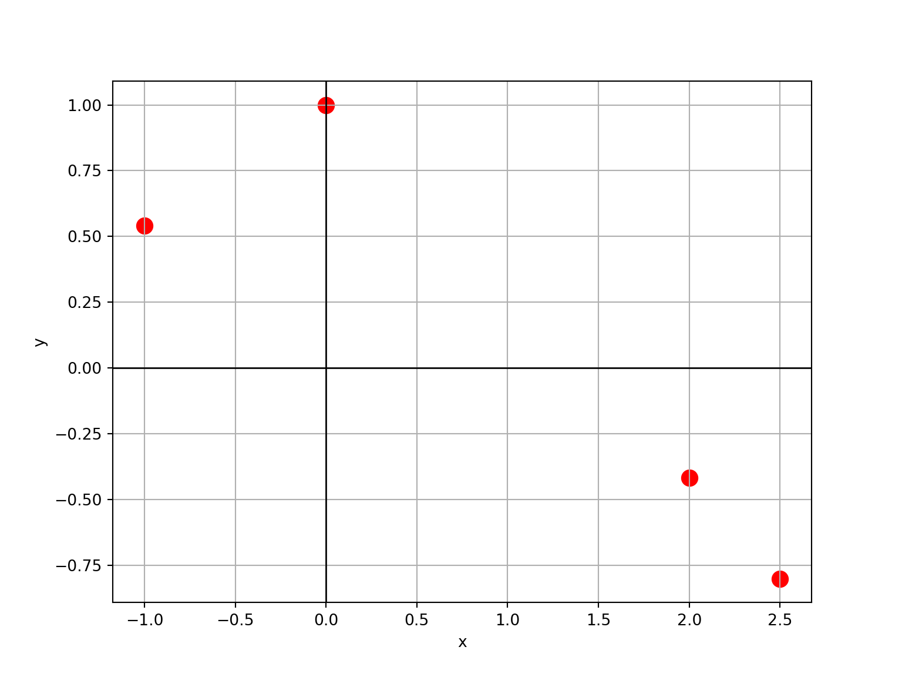
\[ \begin{split} P_3(x) &= \sum_{k=0}^{3} f(x_k) \Big( \prod^{3}_{\substack{i=0 \\ i \neq k}} \frac{x-x_i}{x_k-x_i} \Big) \\ &= f(x_0) \frac{(x - x_1)(x - x_2)(x - x_3)}{(x_0 - x_1)(x_0 - x_2)(x_0 - x_3)} \\ \\ &+f(x_1) \frac{(x - x_0)(x - x_2)(x - x_3)}{(x_1 - x_0)(x_1 - x_2)(x_1 - x_3)} \\ \\ &+f(x_2)\frac{(x - x_0)(x - x_1)(x - x_3)}{(x_2 - x_0)(x_2 - x_1)(x_2 - x_3)} \\ \\ &+f(x_3)\frac{(x - x_0)(x - x_1)(x - x_2)}{(x_3 - x_0)(x_3 - x_1)(x_3 - x_2)} \\ \\ \implies P_3(2.25) =& 0.5403 \times\frac{(2.25 - 0)(2.25 - 2)(2.25 - 2.5)}{(-1-0)(-1-2)(-1-2.5)} \\ \\ &+ 1\times\frac{(2.25 +1)(2.25 - 2)(2.25 - 2.5)}{(0+1)(0-2)(0-2.5)} \\ \\ &-0.4162\times\frac{(2.25 +1)(2.25 - 0)(2.25 - 2.5)}{(2+1)(2-0)(2-2.5)} \\ \\ &-0.8011 \times\frac{(2.25 +1)(2.25 - 0)(2.25 - 2)}{(2.5+1)(2.5-0)(2.5-2)} = \\ \\ &= -0.6217561 \\ \\ &\therefore f(2.25) \approx -0.6217561 \end{split} \]
- La fórmula fue programada en la función provista
lagrange():
x = np.array([-1, 0, 2, 2.5])
fx = np.array([0.5403, 1, -0.4162, -0.8011])
lagrange(x, fx, 2.25)-0.6217560714285715Si en la fórmula anterior en lugar de reemplazar \(x\) por un valor particular (en este caso, \(2.25\)) operamos y re acomodamos los términos, podemos hallar la expresión del polinomio interpolante:
\[ P_3(x) = 0.1042 x^3 -0.4934 x^2 -0.1379 x+1 \]
Podemos graficar este polinomio para ver lo que ha logrado este método:
# Definir la función p3 como una función lambda
p3 = lambda x: 0.1042 * x**3 - 0.4934 * x**2 - 0.1379 * x + 1
# Crear un rango de valores para x
rango_x = np.linspace(-1.2, 2.7, 100)
# Calcular los valores correspondientes de p3
y = p3(rango_x)
# Crear el gráfico
plt.figure(figsize=(8, 6))
plt.grid(True)
plt.axhline(0, color='black', linewidth=1)
plt.axvline(0, color='black', linewidth=1)
plt.scatter(datos['x'], datos['y'], color='red', s=100)
plt.xlabel('x')
plt.ylabel('y')
plt.plot(rango_x, y, label="Polinomio interpolante", color='blue')
plt.legend()
plt.show()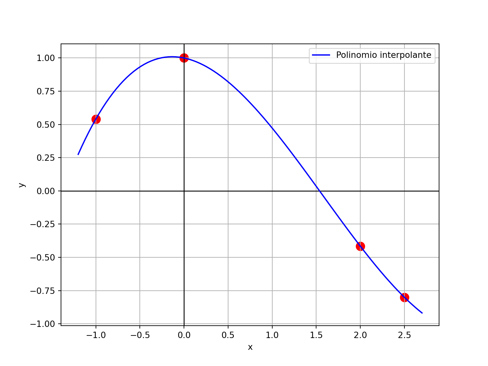
- En Python podemos usar la función
polyfit()de la libreríanumpy.polynomial.polynomialpara obtener la expresión del polinomio interpolante de Lagrange y realizar interpolaciones, pero como siempre escribimmos nuestras propias funciones para entender lo que hacen los métodos y repasar programación:
# Ajustar un polinomio a los datos
x = np.array([-1, 0, 2, 2.5])
fx = np.array([0.5403, 1, -0.4162, -0.8011])
# Coeficientes del polinomio (menor a mayor grado)
coefs = npol.polyfit(x, fx, deg = len(x) - 1)
print(coefs)[ 1. -0.1379019 -0.49343429 0.10416762]# Convertir esos coeficientes en una función polinómica
poli = npol.Polynomial(coefs)
# Mostrar la expresion del polinomio
print(poli)1.0 - 0.1379019·x - 0.49343429·x² + 0.10416762·x³# Evaluar el polinomio interpolante en el punto 2.25
poli(2.25)-0.6217560714285701- La verdadera función que generó los valores tabulados es \(cos(x)\). Podemos compararla con el polinomio interpolante:
y_cos = np.cos(rango_x)
plt.figure(figsize=(8, 6))
plt.grid(True)
plt.axhline(0, color='black', linewidth=1)
plt.axvline(0, color='black', linewidth=1)
plt.scatter(datos['x'], datos['y'], color='red', s=100)
plt.xlabel('x')
plt.ylabel('y')
plt.plot(rango_x, y, label="Polinomio interpolante", color='blue')
plt.plot(rango_x, y_cos, label="Coseno", color='green')
plt.legend()
plt.show()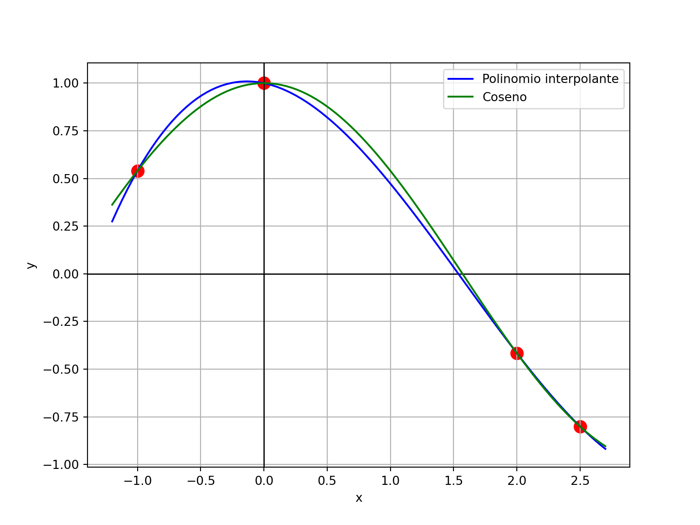
- Ojo, si nos alejamos del rango estudiado, el polinomio no tiene por qué aproximar bien (cuidado con la extrapolación)…
# Función verdadera (coseno) y polinimo interpolante fuera del rango de puntos
# disponibles
rango_x = np.linspace(-5, 8, 100)
y_cos = np.cos(rango_x)
y = p3(rango_x)
plt.figure(figsize=(8, 6))
plt.grid(True)
plt.axhline(0, color='black', linewidth=1)
plt.axvline(0, color='black', linewidth=1)
plt.scatter(datos['x'], datos['y'], color='red', s=100)
plt.plot(rango_x, y, label="Polinomio interpolante", color='blue')
plt.plot(rango_x, y_cos, label="Coseno", color='green')
plt.ylim(-6, 6)(-6.0, 6.0)plt.xlabel('x')
plt.ylabel('y')
plt.legend()
plt.show()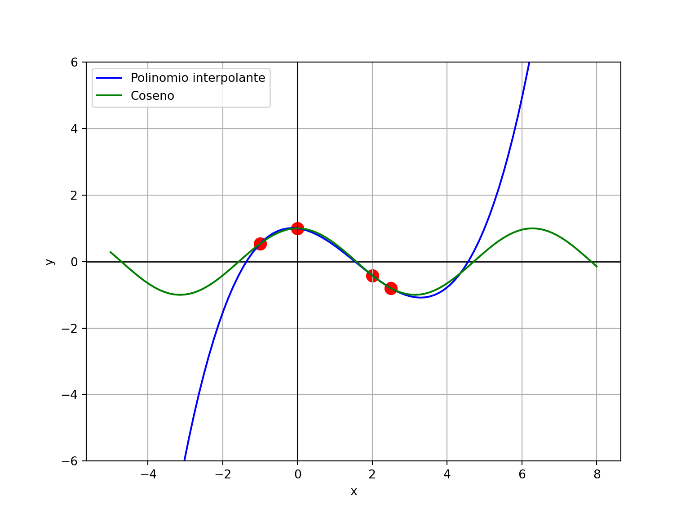
1.2.3 Error de aproximación
En el ejemplo, sabiendo el verdadero valor \(cos(2.25) = -0.6281736\), podemos calcular el error absoluto:
\[|-0.6281736+0.6217561| = 0.0064175\]
y el error relativo:
\[\frac{|-0.6281736+0.6217561|}{|-0.6281736|} = 1.021612\%\]
En una situación práctica donde no tenemos el verdadero \(f(x)\), vale el siguiente resultado.
Se puede demostrar (ver opcionalemente Teorema 3.3) que el error en la aproximación con el polinomio de Lagrange está dado por:
\[ f(x) - P_n(x) = \frac{f^{(n+1)}(\xi)}{(n+1)!}(x-x_0)(x-x_1)...(x-x_n) \]
donde \(\xi\) es algún número dentro del intervalo en el que se encuentran los nodos \(x_i\).
Para saber cuál es la cota superior del error se busca acotar la expresión anterior para cualquier \(\xi\) dentro del rango estudiado (ver opcionalmente ejemplos 3 y 4).
En el ejemplo nuestro, siendo \(f(x) = cos(x)\), \(n=3\) y \(f^{(4)}(x) = cos(x)\):
\[ f(x) - P_n(x) = \frac{cos(\xi)}{4!}(x+1)x(x-2)(x-2.5) \qquad -1 \leq \xi \leq 2.5 \]
Sabiendo que \(|cos(\xi)| \leq 1\), encontramos una cota superior para el error de aproximación:
\[ |f(x) - P_n(x)| \leq \Big|\frac{1}{4!}(x+1)x(x-2)(x-2.5)\Big| \]
Para el punto analizado \(x=2.25\) esa cota superior nos da \(0.01904297\) (y efectivamente el error absoluto, que lo pudimos calcular, era menor que esto).
Este resultado es muy importante porque permite evaluar el desempeño de la aproximación pero muchas veces es impracticable porque no se conoce cuál es la derivada \(f^{(n+1)}\), por lo tanto tiene utilidad teórica pero no práctica.
En esos casos, sólo es posible evaluar la precisión al comparar las aproximaciones obtenidas con polinomios de distinto grado (ver ejemplo en la sección “Ilustración” en páginas 86 y 87).
1.2.4 Ventajas y desventajas
Ventajas:
- Una ventaja de este método de Lagrange es que provee de una forma sencilla una expresión explícita para el polinomio de interpolación.
- Además, no requiere que los puntos \(x_i\) estén ordenados ni sean equiespaciados.
Desventaja:
- Dado que el término de error difícilmente puede ser construído, generalmente se necesitan considerar varios polinomios de interpolación de distinto grado para comparar las aproximaciones logradas.
- Sin embargo, con el método de Lagrange no hay relación entre la construcción de un polinomio de un grado \(n\) y otro de grado \(n+1\); cada polinomio debe construirse individualmente realizando todos los cálculos otra vez, lo cual resulta laborioso y poco eficiente.
El Método de Neville (no lo estudiaremos) soluciona este inconveniente, reformulando los cálculos para poder obtener aproximaciones usando cálculos previos. Una aproximación de grado \(n+1\) se logra tomando la de grado \(n\) y sumándole otro término.
Sin embargo, este método no permite obtener una expresión explícita del polinomio.
Para poder generar sucesivamente los polinomios interpolantes se puede recurrir a los métodos de diferencias de Newton que se presentan en la siguiente sección.
1.3 Polinomios de interpolación de Newton
- A pesar de que el polinomio que \(P_n(x)\) que concuerda con la función \(f\) en \(x_0, ..., x_n\) es único, existen diferentes representaciones algebraicas que son útiles en distintas situaciones y la fórmula de Lagrange es sólo una de ellas.
- Para poder generer polinomios interpolantes con otra expresión que admita cálculos recursivos (es decir, aprovechando los cálculos hechos para polinomios de menor grado), vamos a necesitar obtener una tabla de diferencias divididas y una tabla de diferencias ordinarias.
1.3.1 Diferencias divididas
- Presentar formalmente a las diferencias divididas es más difícil que calcularlas.
Definición:
La cero-ésima diferencia dividida de la función \(f\) respecto a \(x_i\) es: \(f[x_i] = f(x_i)\).
La primera diferencia dividida de \(f\) respecto a \(x_i\) y \(x_{i+1}\) es:
\[ f[x_i, x_{i+1}] = \frac{f[x_{i+1}] - f[x_i]}{x_{i+1} - x_i} \]
La segunda diferencia dividida de \(f\) respecto a \(x_i\), \(x_{i+1}\) y \(x_{i+2}\) es:
\[ f[x_i, x_{i+1}, x_{i+2}] = \frac{f[x_{i+1},x_{i+2}] - f[x_{i},x_{i+1}]}{x_{i+2} - x_i} \]
De manera general, después de haber calculado las \(k-1\) diferencias divididas:
\[ f[x_i, ..., x_{i+k-1}] \quad \text{ y } \quad f[x_{i+1}, ..., x_{i+k}], \]
la \(k\)-ésima diferencia dividida relativa a \(x_i, ..., x_{i+k}\) es:
\[ f[x_i, ..., x_{i+k}] = \frac{f[x_{i+1}, ..., x_{i+k}] - f[x_i, ..., x_{i+k-1}]}{x_{i+k} - x_i} \]
- Lo anterior es más claro si lo presentamos en una tabla de diferencias divididas.
- Por ejemplo, con 6 puntos:
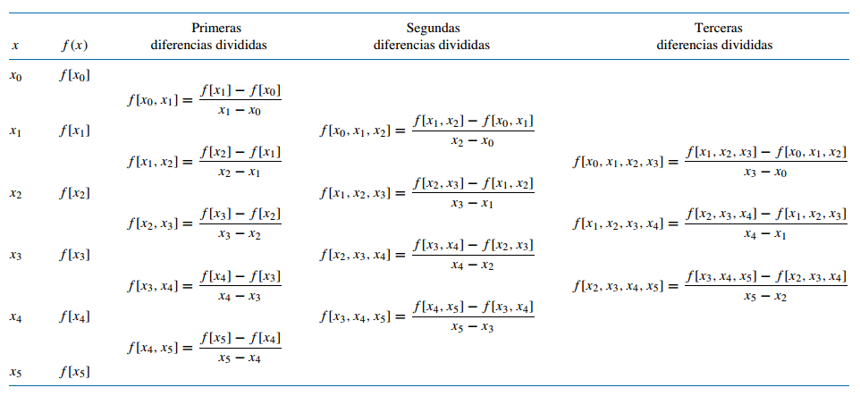
La tabla anterior podría llegar hasta las quintas diferencias divididas.
En general, si contamos con \(n+1\) puntos, podemos calcular hasta las diferencias divididas de orden \(n\).
1.3.2 Fórmula general de Newton para la interpolación con diferencias divididas
- Para poder generar polinomios interpolantes de distinto orden recursivamente Newton propone emplear la siguiente representación para \(P_n(x)\):
De hecho, antes repasamos la fórmula de la recta (polinomio interpolante de grado 1) que pasa por dos puntos y estaba escrita de esa forma:
\[ P_1(x) = \underbrace{f(x_0)}_{a_0} + \underbrace{\frac{f(x_1) - f(x_0)}{x_1 - x_0}}_{a_1} (x - x_0) \]
Si miramos bien, tenemos que notar que \(a_0\) y \(a_1\) coinciden con la definición de diferencias divididas para \(x_0\) de orden 0 y 1, respectivamente.
De manera general, se puede probar que las constantes \(a_k\) necesarias para expresar \(P_n(x)\) de la forma deseada \(\eqref{eq:eq1}\) son las diferencias divididas \(a_k = f[x_0, ...,x_k]\), haciendo que el polinomio quede así:
\[\begin{equation} \label{eq:eq2} P_n(x) = f[x_0] + \sum_{k=1}^{n} f[x_0,..., x_k] (x-x_0)...(x-x_{k-1}) \end{equation}\]Es decir, se usan las diferencias divididas que están en la diagonal de la tabla.
Ejemplo. Retomamos el ejemplo anterior. A continuación se presentan los puntos tabulados junto con las diferencias divididas. Los valores en negrita son los que se utilizan en la fórmula. Verificar los cálculos a mano.
i \(x_i\) \(f(x_i)\) Primeras diferencias Segundas diferencias Terceras diferencias 0 -1 0.5403 0.4597 1 0 1.0000 -0.3893 -0.7081 0.1042 2 2 -0.4162 -0.0247 -0.7698 3 2.5 -0.8011 En Python vamos a usar la función provista
diferencias()para obtener este resultado:
diferencias(fx, x)array([[ 0.5403 , 0.4597 , -0.38926667, 0.10416762],
[ 1. , -0.7081 , -0.02468 , nan],
[-0.4162 , -0.7698 , nan, nan],
[-0.8011 , nan, nan, nan]])Vamos emplear el método de las diferencias divididas de Newton para interpolar el valor de la función \(f\) en \(x=2.25\), con el polinomio interpolante de grado 3 que pasa por los cuatro puntos tabulados:
\[ \begin{split} P_3(x) &= f[x_0] + \sum_{k=1}^{3} f[x_0,..., x_k] (x-x_0)...(x-x_{k-1}) \\\\ &= 0.5403 \\\\ &+ 0.4597 (x+1) \\\\ &- 0.3893 (x+1)x \\\\ &+ 0.1042 (x+1)x(x-2) \\\\ \implies P_3(2.25) &= -0.6217561 \end{split} \]
En Python lo vamos a aplicar en la función
newton_general()(provista en el archivo de funciones):
newton_general(x, fx, valor = 2.25)-0.6217560714285713- Como el polinomio de grado 3 que pasa por 4 puntos es único, este resultado coincide con el del método de Lagrange.
- Sin embargo, tiene una ventaja importante. No siempre es necesario ni conveniente ajustar el polinomio de mayor orden posible, pero probar con distintos grados es muy laborioso en el método de Lagrange.
- En cambio este método lo vuelve más sencillo, porque pasamos de una aproximación de un grado menor a otra de un grado superior solamente sumando un término más en la cuenta. Se aprovechan los cálculos anteriores. Entonces:
| Grado | \(P_n(2.25) =\) |
|---|---|
| 1 | \(f[x_0] + f[x_0, x_1] (x-x_0) = 2.0343\) |
| 2 | \(2.0343 + f[x_0, x_1, x_2] (x-x_0)(x-x_1) = -0.8124\) |
| 3 | \(-0.8124 + f[x_0, x_1, x_2, x_3] (x-x_0)(x-x_1)(x-x_3) = -0.6218\) |
- En Python:
for grado in range(1, 4):
print(newton_general(x, fx, valor = 2.25, g = grado))2.034325
-0.8121874999999998
-0.6217560714285713- La primera aproximación es una interpolación lineal y pasa por los primeros dos puntos; la segunda es cuadrática y pasa por los primeros tres puntos y la última es cúbica y pasa por todos los puntos:
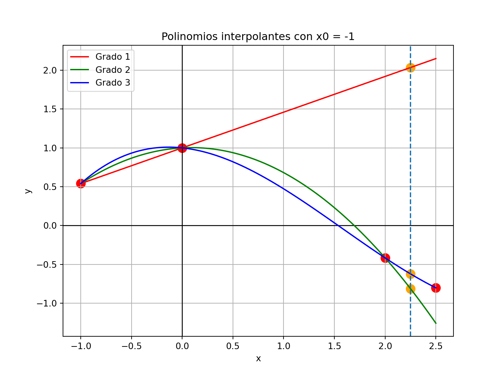
- Es claro que la aproximación lineal anterior no es buena para \(x=2.25\).
- Sin embargo, una recta que pase por los últimos dos puntos podría tener un desempeño similar al del polinomio de grado 3:
newton_general(x[2:], fx[2:], 2.25)-0.60865# preparar curvas para graficar
p1b = npol.Polynomial(npol.polyfit(x[2:], fx[2:], deg = 1))
y_p1b = p1b(rango_x)
# Crear el gráfico
plt.figure(figsize=(8, 6))
plt.grid(True)
plt.axhline(0, color='black', linewidth=1)
plt.axvline(0, color='black', linewidth=1)
plt.scatter(datos['x'], datos['y'], color='red', s=100)
plt.xlabel('x')
plt.ylabel('y')
plt.plot(rango_x, y_p1, label="Con x0 = -1", color='red')
plt.plot(rango_x, y_p1b, label="Con x0 = 2", color='green')
plt.legend()
plt.title("Polinomios interpolantes de grado 1")
plt.axvline(x=2.25, linestyle='--')
plt.scatter([2.25, 2.25], [p1(2.25), p1b(2.25)], color = "orange", s = 100)
plt.show()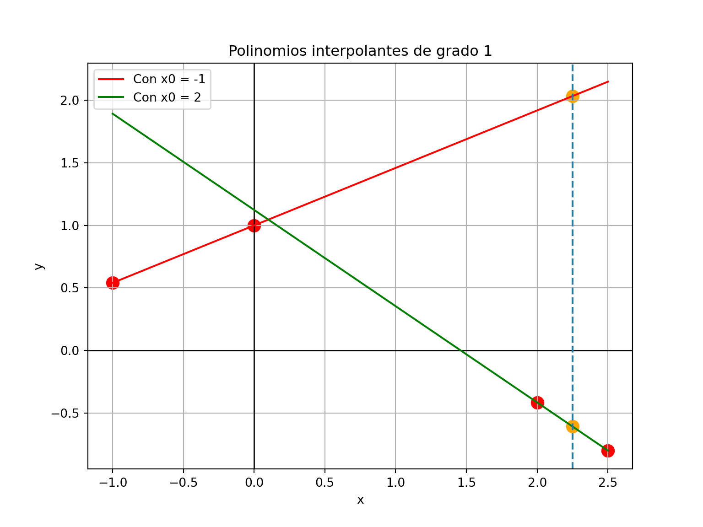
- La expresión anterior facilita la obtención de polinomios interpolantes de diferentes grados, puesto que los mismos sólo se diferencian en términos que se van agregando en la parte de la sumatoria.
- Sin embargo, la expresión de la fórmula no deja de ser algo compleja e involucra muchos cálculos.
- En el caso de que los nodos \(x_i\) están ordenados de menor a mayor y tengan igual espaciado entre ellos, la fórmula se simplifica muchísimo y recibe el nombre de
- Pero para conocer esta fórmula necesitamos definir las diferencias ordinarias.
1.3.3 Diferencias ordinarias
- Las diferencias ordinarias se asemejan a las divididas, pero no hacen la división por las restas entre valores de \(x\).
Definición: las diferencias ordinarias se expresan como:
\[ \Delta^{j} f(x_k) = \Delta^{j-1} f(x_{k+1}) - \Delta^{j-1} f(x_k) \qquad j = 1, ..., n \qquad k = 0, ..., j-1 \qquad \Delta^{0} f(x_k) = f(x_k) \]
- Es decir que las diferencias de orden 0 son los mismos valores \(f(x_i)\), las diferencias de orden 1 son \(f(x_{k+1}) - f(x_k)\), las diferencias de orden 2 son restas con las de orden 1, y así sucesivamente.
- Para simplificar la notación, cuando no haya ambigüedad vamos a escribir: \(\Delta^{j} f(x_k) = \Delta^j_k\).
- La tabla de diferencias ordinarias es:
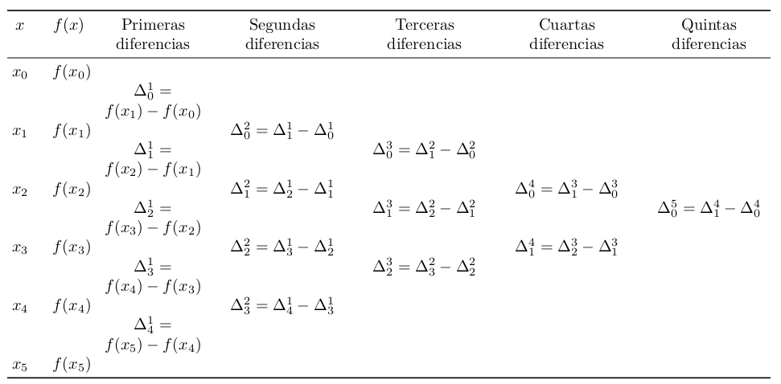
- En general, si contamos con \(n+1\) puntos, podemos calcular hasta las diferencias ordinarias de orden \(n\).
1.3.4 Fórmula de interpolación de Newton con diferencias hacia adelante
Veamos cómo la fórmula general de Newton se simplifica para el caso particular en el que los nodos \(x_i\) están ordenados de menor a mayor y son equiespaciados.
Llamamos con \(h\) al espaciado uniforme: \(h = x_{i+1}-x_i\), para cada \(i=0, 1, ..., n-1\).
Cualquier valor \(x\) puede ser expresado como \(x = x_0 + sh\) y en particular los nodos se pueden escribir como \(x_i = x_0 + ih\).
Entonces nos queda: \(x - x_i = (s-i)h\).
Haciendo los reemplazos correspondientes y después de varios pasos algebraicos, \(\eqref{eq:eq2}\) nos queda de una forma mucho más compacta:
\[ \begin{aligned} P_n(x) &= f(x_0) + s \Delta^1_0 + \frac{s(s-1)}{2!} \Delta^2_0 + \frac{s(s-1)(s-2)}{3!} \Delta^3_0 + ...\\ &= \sum_{k=0}^n {s \choose k} \Delta_0^k \end{aligned} \]
donde: \({s \choose k} = \frac{s(s-1)(s-2)...(s-k+1)}{k!}\).
Esta es la fórmula de interpolación de Newton con diferencias hacia adelante, porque utiliza la primera diagonal desde arriba a la izquierda hacia abajo a la derecha de la tabla de diferencias ordinarias.
Hay que observar que la fórmula empieza con el valor de \(f(x_0)\) y luego continúa empleando las diferencias \(\Delta_0^k\).
Ejemplo.
- Sea \(f(x)\) una función desconocida de la cual se tienen los valores tabulados \((x_i, f(x_i))\) que se presentan a continuación, junto con una representación gráfica de los mismos:
| \(i\) | \(x_i\) | \(f(x_i)\) |
|---|---|---|
| 0 | 2 | 0.3010 |
| 1 | 3 | 0.4771 |
| 2 | 4 | 0.6021 |
| 3 | 5 | 0.6990 |
| 4 | 6 | 0.7781 |
| 5 | 7 | 0.8451 |
# Crear un DataFrame con los datos
datos = pd.DataFrame({'x': range(2, 8), 'y': [0.3010, 0.4771, 0.6021, 0.6990, 0.7781, 0.8451]})
# Crear el gráfico
plt.figure()
plt.scatter(datos['x'], datos['y'], color='red', s=100)
plt.axhline(0, color='black', linewidth=1)
plt.axvline(0, color='black', linewidth=1)
plt.xlabel('x')
plt.ylabel('y')
plt.xlim(-0.2, 8)(-0.2, 8.0)plt.grid(True)
plt.show()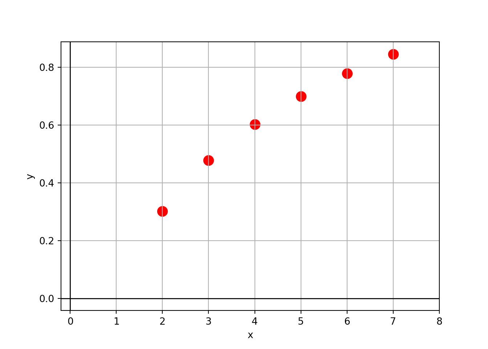
- La correspondiente tabla de diferencias ordinarias es (verificar los cálculos a mano):
| \(i\) | \(x_i\) | \(f(x_i)\) | \(\Delta^1_i\) | \(\Delta^2_i\) | \(\Delta^3_i\) | \(\Delta^4_i\) | \(\Delta^5_i\) |
|---|---|---|---|---|---|---|---|
| 0 | 2 | 0.3010 | |||||
| 0.1761 | |||||||
| 1 | 3 | 0.4771 | -0.0511 | ||||
| 0.1250 | 0.0230 | ||||||
| 2 | 4 | 0.6021 | -0.0281 | -0.0127 | |||
| 0.0969 | 0.0103 | 0.0081 | |||||
| 3 | 5 | 0.6990 | -0.0178 | -0.0046 | |||
| 0.0791 | 0.0057 | ||||||
| 4 | 6 | 0.7781 | -0.0121 | ||||
| 0.0670 | |||||||
| 5 | 7 | 0.8451 |
- Los valores en negrita son los que utiliza la fórmula.
- También usamos la función
diferencias()para obtenerla, que devuelve las diferencias ordinarias si no se provee un vector de \(x_i\):
fx = np.array([.3010, .4771, .6021, .6990, .7781, .8451])
diferencias(fx)array([[ 0.301 , 0.1761, -0.0511, 0.023 , -0.0127, 0.0081],
[ 0.4771, 0.125 , -0.0281, 0.0103, -0.0046, nan],
[ 0.6021, 0.0969, -0.0178, 0.0057, nan, nan],
[ 0.699 , 0.0791, -0.0121, nan, nan, nan],
[ 0.7781, 0.067 , nan, nan, nan, nan],
[ 0.8451, nan, nan, nan, nan, nan]])Vamos a aproximar \(f(2.3)\) con un polinomio de grado 5 que pase por todos los puntos provistos:
- \(h = 1\) (espaciado)
- \(x=2.3\)
- \(x_0 = 2\)
- \(s = \frac{x-x_0}{h} = \frac{2.3-2}{1} = 0.3\)
\[ \begin{aligned} P_5(x) &= \sum_{k=0}^5 {s \choose k} \Delta_0^k \\ \\ &= f(x_0) + s \Delta^1_0 + \frac{s(s-1)}{2!} \Delta^2_0 + \frac{s(s-1)(s-2)}{3!} \Delta^3_0 + ...\\ \\ &= 0.3010 \\\\ &+ 0.3 \times 0.1761 \\ \\ &+ \frac{0.3(0.3-1)}{2!} (-0.0511) \\ \\ &+ \frac{0.3(0.3-1)(0.3-2)}{3!} 0.0230 \\ \\ &+ \frac{0.3(0.3-1)(0.3-2)(0.3-3)}{4!} (-0.0127) \\ \\ &+ \frac{0.3(0.3-1)(0.3-2)(0.3-3)(0.3-4)}{5!} 0.0081 \\ \\ \implies P_5(2.3) &= 0.3613 \end{aligned} \]
En Python vamos a usar la función
newton_adelante()(provista):
newton_adelante(fx, s = 0.3)0.36131479777500003- Si en la fórmula anterior reemplazamos \(s\) por su defición \((x - 2)/1\) y con mucha paciencia operamos en términos de \(x\), podemos encontrar una expresión explícita para el polinomio.
- Como vimos antes, en Python lo hacemos con:
x = np.arange(2, 8)
fx = np.array([.3010, .4771, .6021, .6990, .7781, .8451])
# Coeficientes del polinomio (menor a mayor grado)
coefs_g5 = npol.polyfit(x, fx, deg = len(x) - 1)
print(coefs)[ 1. -0.1379019 -0.49343429 0.10416762]# Convertir esos coeficientes en una función polinómica
poli_g5 = npol.Polynomial(coefs_g5)
# Mostrar la expresion del polinomio
print(poli_g5)-0.4086 + 0.55547833·x - 0.13677083·x² + 0.02170417·x³ - 0.00187917·x⁴ +
(6.75e-05)·x⁵# Evaluar el polinomio interpolante en el punto 2.3
poli_g5(2.3)0.3613147977750001- Luego, lo podemos graficar:
# Crear un rango de valores para x
rango_x = np.linspace(2, 7, 100)
# Calcular los valores correspondientes
y_g5 = poli_g5(rango_x)
# Crear el gráfico
plt.figure()
plt.scatter(datos['x'], datos['y'], color='red', s=100)
plt.axhline(0, color='black', linewidth=1)
plt.axvline(0, color='black', linewidth=1)
plt.xlabel('x')
plt.ylabel('y')
plt.xlim(-0.2, 8)(-0.2, 8.0)plt.grid(True)
plt.plot(rango_x, y_g5, color='blue')
plt.title("Polinomio interpolante de grado 5")
plt.scatter(2.3, poli_g5(2.3), color = "orange", s = 100)
plt.axvline(x=2.3, linestyle='--')
plt.show()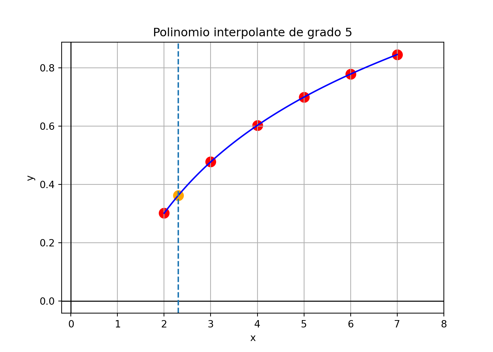
Como el polinomio de grado 5 que pasa por 6 puntos es único, la expresión hallada coincide a la que se hubiese obtenido con la fórmula general de Newton o con la de Lagrange.
¿Es necesario haber empleado un polinomio de grado 5?
Viendo el gráfico podemos pensar que una función cuadrática puede proveer un buen ajuste.
Eso tiene la ventaja de ahorrar cálculos y evita acumular errores por redondeo.
Por eso, podríamos haber propuesto inicialmente un polinomio interpolante de grado 2, que pasa por los primeros 3 puntos, usando hasta la diferencia de segundo orden:
- \(h = 1\) (espaciado)
- \(x=2.3\)
- \(x_0 = 2\)
- \(s = \frac{x-x_0}{h} = \frac{2.3-2}{1} = 0.3\)
\[ \begin{aligned} P_2(x) &= \sum_{k=0}^2 {s \choose k} \Delta_0^k \\ \\ &= f(x_0) + s \Delta^1_0 + \frac{s(s-1)}{2!} \Delta^2_0 \\ \\ &= 0.3010 + 0.3 \times 0.1761 + \frac{0.3(0.3-1)}{2!} (-0.0511) \\ \\ \implies P_2(2.3) &= 0.3592 \end{aligned} \]
# Polinomio interpolante de grado 2 que pasa por los primeros 3 ptos
poli_g2 = npol.Polynomial(npol.polyfit(x[:3], fx[:3], deg = 2))
# Mostrar la expresion del polinomio
print(poli_g2)-0.2045 + 0.30385·x - 0.02555·x²# Evaluar el polinomio interpolante en el punto 2.3
poli_g2(2.3)0.35919549999999956# Graficarlo
y_g2 = poli_g2(rango_x)
plt.figure()
plt.scatter(datos['x'], datos['y'], color='red', s=100)
plt.axhline(0, color='black', linewidth=1)
plt.axvline(0, color='black', linewidth=1)
plt.xlabel('x')
plt.ylabel('y')
plt.xlim(-0.2, 8)(-0.2, 8.0)plt.grid(True)
plt.plot(rango_x, y_g2, color='blue')
plt.title("Polinomio interpolante de grado 2 con x0 = 2")
plt.scatter(2.3, poli_g2(2.3), color = "orange", s = 100)
plt.axvline(x=2.3, linestyle='--')
plt.show()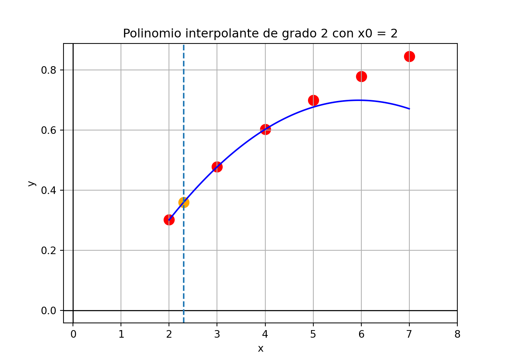
Observación: es claro que no podemos esperar que este polinomio provea aproximaciones razonables para \(x\) cercano al final del rango.
Lo bueno de este método, a diferencia del del Lagrange y al igual que la fórmula general, es que permite empezar por una interpolación de grado 1 e ir generado las aproximaciones de grado superior al agregar de a uno los términos siguientes, aprovechando los cálculos anteriores:
| Grado | \(P_n(2.3) =\) |
|---|---|
| 1 | \(f(x_0) + s \Delta^1_0 = 0.3538\) |
| 2 | \(0.3538 + \frac{s(s-1)}{2!}\Delta^2_0 = 0.3592\) |
| 3 | \(0.3592 + \frac{s(s-1)(s-2)}{3!}\Delta^3_0 = 0.3606\) |
| 4 | \(0.3606 + \frac{s(s-1)(s-2)(s-3)}{4!}\Delta^4_0 = 0.3611\) |
| 5 | \(0.3611 + \frac{s(s-1)(s-2)(s-3)(s-4)}{5!}\Delta^5_0 = 0.3613\) |
- En Python:
for grado in range(1, 6):
print(newton_adelante(fx, s = 0.3, g = grado))0.35383
0.3591955
0.360564
0.36107406375
0.36131479777500003- La primera aproximación es una interpolación lineal y pasa por los primeros dos puntos; la segunda es cuadrática y pasa por los primeros tres puntos, etc.
(-0.2, 8.0)(-0.05, 1.0)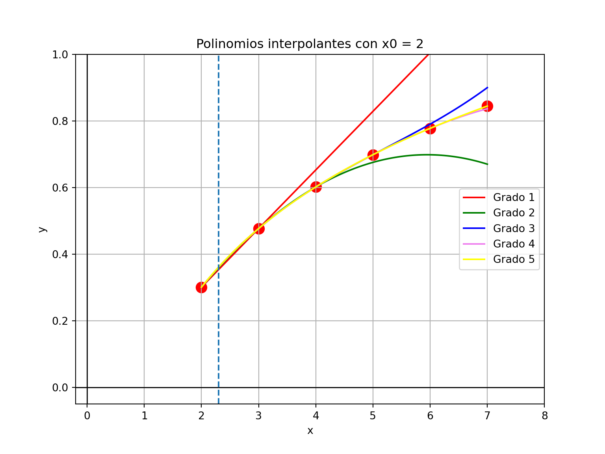
- La función que generó la tabla de este ejemplo es el logaritmo en base 10, es decir, que el valor exacto es \(f(2.3) = log(2.3) = 0.3617\).
- Con esta información, podemos calcular el Error Relativo que resulta de hacer las aproximaciones anteriores:
| Grado | \(P_n(2.3) =\) | ER |
|---|---|---|
| 1 | 0.3538 | 0.0218 |
| 2 | 0.3592 | 0.0070 |
| 3 | 0.3606 | 0.0032 |
| 4 | 0.3611 | 0.0018 |
| 5 | 0.3613 | 0.0012 |
1.3.5 Otras fórmulas de interpolación de Newton
Así como dijimos que cualquier valor \(x\) puede ser expresado como \(x = x_0 + sh\), también podemos decir que cualquier valor \(x\) puede ser expresado como \(x = x_n +sh\) con \(s\) negativo y los nodos se pueden escribir como \(x_i = x_n - (n-i)h\).
Teniendo en cuenta esto y haciendo varios reemplazos y pasos, el polinomio \(\eqref{eq:eq2}\) queda así:
\[ \begin{aligned} P_n(x) &= f(x_n) - (-s) \Delta^1_{n-1} + \frac{-s(-s-1)}{2!} \Delta^2_{n-2} - \frac{-s(-s-1)(-s-2)}{3!} \Delta^3_{n-3} + ...\\ &= \sum_{k=0}^n (-1)^k {-s \choose k} \Delta_{n-k}^k \end{aligned} \]
Esta es la fórmula de interpolación de Newton con diferencias hacia atrás, porque utiliza la última diagonal desde abajo a la izquierda hacia arriba a la derecha de la tabla de diferencias ordinarias.
Hay que observar que la fórmula empieza con el valor de \(f(x_n)\) y luego continúa empleando la última diferencia de cada orden.
No realizaremos ejemplos con esta forma de interpolación.
Sin embargo, al tener dos fórmulas de diferencias ordinarias para hacer interpolaciones, cabe preguntarse: ¿en qué se diferencian? ¿Cuál usar?
Ambas fórmulas son expresiones diferentes del mismo polinomio de grado \(n\), por lo tanto, es lo mismo usar una u otra.
No obstante, sus resultados pueden diferir por causa de los errores de redondeo propios de la aritmética finita con la que se realizan los tantísimos cálculos que hay que hacer y que son distintos en una y otra fórmula.
Si tenemos que interpolar para un \(x\) cercano al comienzo de la tabla (es decir, más bien cerca de \(x_0\)), conviene utilizar la fórmula hacia adelante. La misma empieza usando \(f(x_0)\), y estando \(x\) cerca de \(x_0\), es de esperar que \(f(x_0)\) esté cerca de \(f(x)\), por lo cual es un buen punto de partida.
En cambio, si tenemos que interpolar para un \(x\) cercano al final de la tabla, por la misma razón conviene utilizar la fórmula hacia atrás.
Atención: si en lugar de usar las fórmulas completas, empleamos menos términos para interpolar con polinomios de menor grado (es decir, que pasen por algunos pero no todos los \(x_i\)), entonces los polinomios que resulten de una u otra fórmula ya no serán equivalentes (porque la fórmula hacia adelante usará los primeros puntos tabulados, mientras que la fórmula hacia atrás usará los últimos).
¿Y si el valor de \(x\) está más bien cerca de mitad de tabla?…
Las fórmulas de diferencias hacia adelante y hacia atrás de Newton no son adecuadas para aproximar \(f(x)\) cuando \(x\) se encuentra cerca del centro de la tabla.
Existen varias fórmulas de diferencias divididas para este caso, cada una más ventajosa que otras para distintas situaciones.
Estos métodos reciben el nombre de fórmulas de diferencias centradas.
Uno de ellos se conoce como fórmula de Stirling.
La fórmula considera que \(x_0\) es el nodo central y entonces hay que “cambiarle el nombre” a los valores de la tabla de diferencias ordinarias (pero son los mismos):
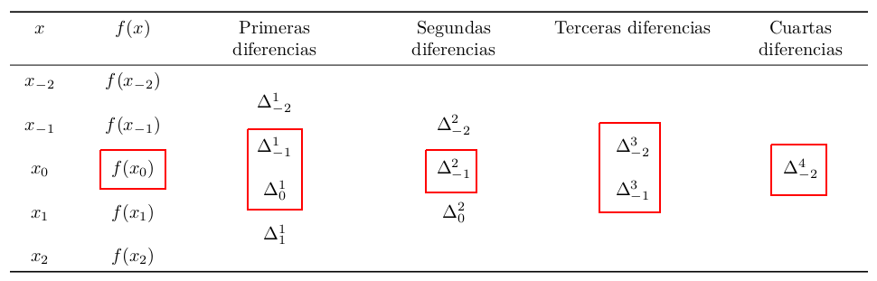
El polinomio de Stirling usa las diferencias que están pintadas, pero no consideraremos su fórmula.
En resumen, la siguiente tabla de diferencias ordinarias tiene indicadas cuáles son las que se usan en un polinomio de interpolación con las fórmulas de diferencias hacia adelante, hacia atrás y centradas.
Si se construye un polinomio de grado \(n\), los tres polinomios son el mismo.
Dependiendo de dónde se encuentre el punto \(x\) a interpolar, conviene usar una u otra para disminuir errores de redondeo.
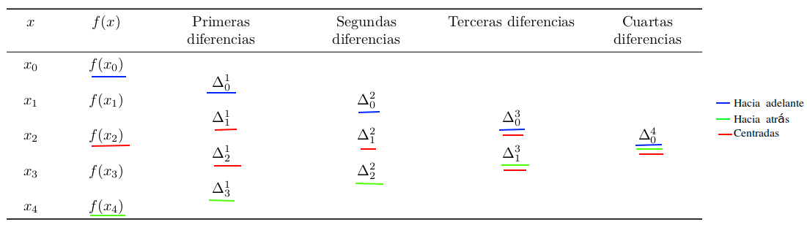
1.4 Observaciones finales
- Un polinomio de grado \(n\) ajustado a \(n+1\) puntos es único.
- El polinomio de interpolación se puede expresar en varias formas distintas, pero todas son equivalentes por el punto anterior.
- Si tenemos \(n+1\) puntos podemos calcular \(n\) columnas de diferencias hacia adelante.
- Si la función \(f(x)\) que dio lugar a la tabla es un polinomio de orden \(q\), entonces la columna para la diferencia de orden \(q\) es constante y las siguientes columnas son todas nulas.
- Por lo tanto, si en el proceso de obtención de las diferencias sucesivas de una función, las diferencias de orden \(q\) se vuelven constantes (o aproximadamente constantes), sabemos que los datos provienen exactamente (o muy aproximadamente) de un polinomio de orden \(q\).
- Errores de redondeo podrían hacer que a pesar de que los datos provengan de un polinomio, no encontremos diferencias constantes.
- Si una función se aproxima mediante un polinomio de interpolación, no hay garantía de que dicho polinomio converja a la función exacta al aumentar el número de datos. En general, la interpolación mediante un polinomio de orden grande debe evitarse o utilizarse con precauciones extremas.
- Eso se debe a que los polinomios de orden superior pueden oscilar erráticamente; es decir, una fluctuación menor sobre una pequeña parte del intervalo puede inducir fluctuaciones grandes sobre todo el rango (ver ejemplo en la figura 3.14).
- Aunque no existe un criterio para determinar el orden óptimo del polinomio de interpolación, generalmente se recomienda utilizar uno con orden relativamente bajo en un pequeño rango de \(x\).